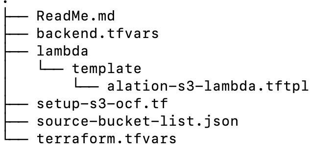

Use Terraform to Set Up Inventory and Incremental MDE¶
Alation Cloud Service Applies to Alation Cloud Service instances of Alation
Customer Managed Applies to customer-managed instances of Alation
Alation can provide a Terraform script that can be used to create the necessary AWS resources such as destination bucket for inventory reports and setting up Lambda function to perform incremental extraction for the Amazon S3 OCF connector. Create a ticket with Alation Support about receiving the Terraform script.
To perform the required configuration for an S3 OCF file system source using Terraform, install Terraform version 1.0.10 or above. The Terraform script will need some inputs.
Terraform script structure:
{kind=link}
The following table provides the description of each file in the script:
File Name |
Purpose |
|---|---|
ReadMe.md |
This file provides the basic information about the Terraform script. |
backend.tfvars |
This file will be used to maintain Terraform backend state. |
terraform.tfvars |
This file will have the parameters details which needs to be provided by the user. |
source-bucket-list.json |
This file will have the list of buckets in a json format. |
lambda/template/alation-s3- lambda.tftpl |
A template file with lambda function definition. |
setup-s3-ocf.tf |
Actual script file that will create all the resources. |
Prerequisite¶
Create a bucket in Amazon S3 to maintain a Terraform state. This bucket will store the Terraform state information remotely so if multiple users are using the same script then it will be consistent.
Create a new user with the following access to run the terraform script:
Create bucket, edit/view existing buckets (buckets that are to be cataloged in Alation).
Create an IAM policy and role with the following access:
IAMFullAccess
AmazonS3FullAccess
AWSLambda_FullAccess
Lambda function
These permissions are required to create and /or update these entities with the script.
Update the backend.tfvars file with the following information:
Variable name
Sample value
Description
bucket
terraform-state-management-bucketThe bucket that was created to store the Terraform state
key
tf-state/terraform.tfstateTerraform state will be stored in this key. It is not recommended to change the key if it is not required.
region
us-east-1AWS region
access_key
XXXXXAWS Access Key of the user created for Terraform.
secret_key
XXXXXAWS Access Secret Key
Update the terraform.tfvars file with below information:
Variable name
Sample value
Description
aws_access_key
XXXXXAWS Access Key of the user created for Terraform.
aws_secret_key
XXXXXAWS Access Secret Key
aws_region
us-east-1AWS region
target_bucket_for_inventory
alation-destination-bucketProvide a unique name for the destination bucket. A destination bucket where inventory and incremental data will be stored. This bucket will be created by the Terraform script.
incremental_sync
true / falseTrue - Set as true if you want to use the incremental sync feature. If set as true, then the script will create a lambda function and its related resources.
False - Set as false if you don’t want to use the incremental sync feature. If set as false, then the script will create only the inventory configuration.
lambda_function_name
alation-s3-lambda-functionProvide a unique name for the destination bucket. This is applicable only if the incremental_sync is set to true.
The following optional variables can be added in the terraform.tfvars file if required.
Variable name
Sample value
Description
inventory_frequency
DailyIf you want to change the inventory frequency then you can change it to Weekly. Make sure that the frequery match with the metadata extraction schedule.
inventory_enablement
falseSet this to false if you want to disable inventory.
Update the source-bucket-list.json file with a list of buckets. The buckets that are added to this file must exist in Amazon S3.
Example:
[ "bucket-1", "bucket-2" ]
Execute the Terraform Script¶
Sequentially execute the following commands:
terraform init --backend-config=backend.tfvars
terraform apply -auto-approveNote
To review the changes made by the Terraform script, execute terraform plan before terraform apply -auto-approve.
The following table provides the purpose of optional commands that can be executed only if required:
Command |
Purpose |
|---|---|
terraform destroy -auto-approve |
To remove all the resources created using Terraform script. |
terraform apply -auto-approve |
To add/remove a new bucket, update the
|
terraform apply -auto-approve |
To add a new bucket, update the |
terraform apply -refresh-only -auto-approve terraform apply -auto-approve |
If a bucket is deleted from Amazon S3 and still present in
|